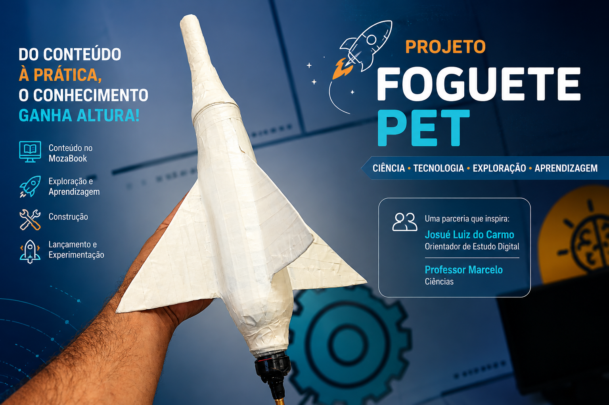
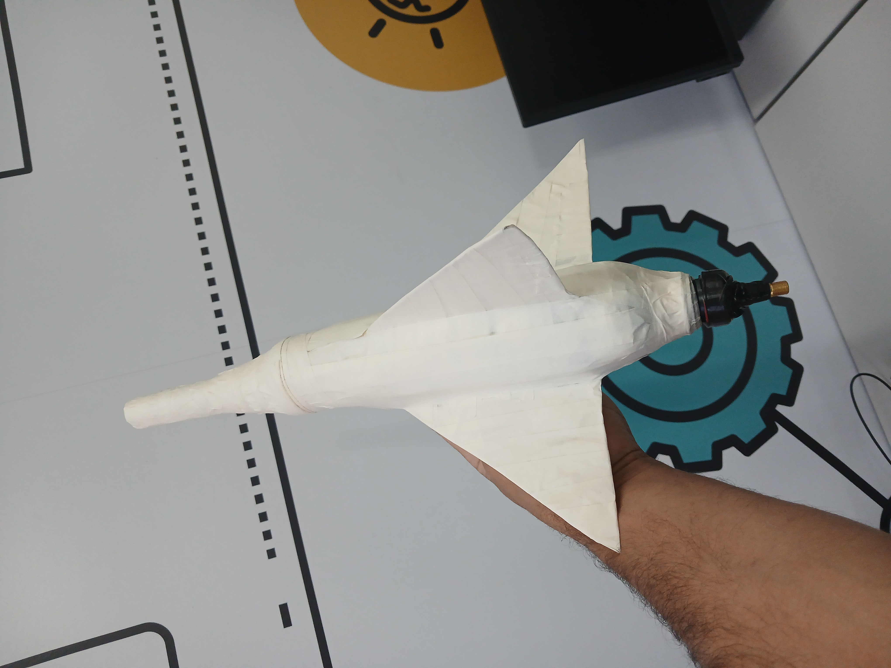
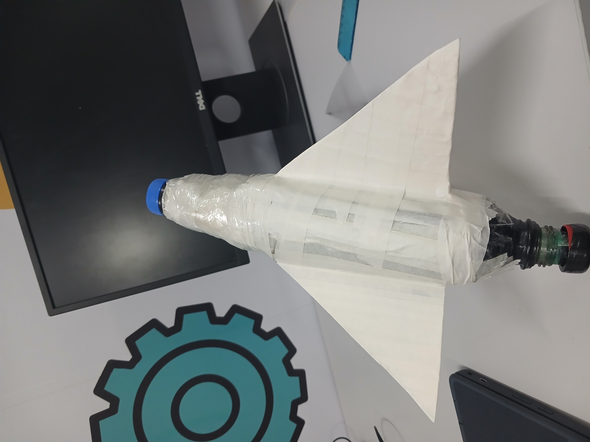
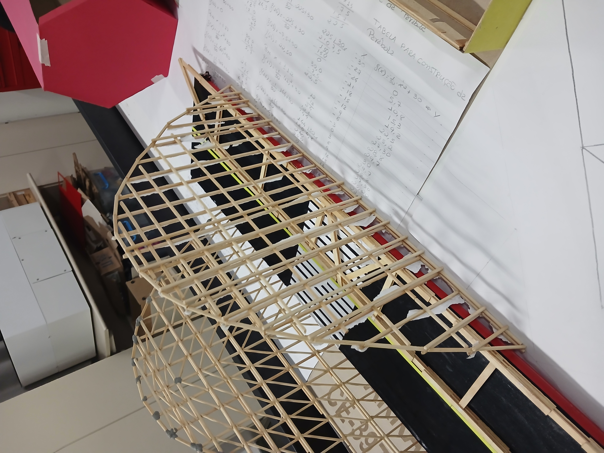
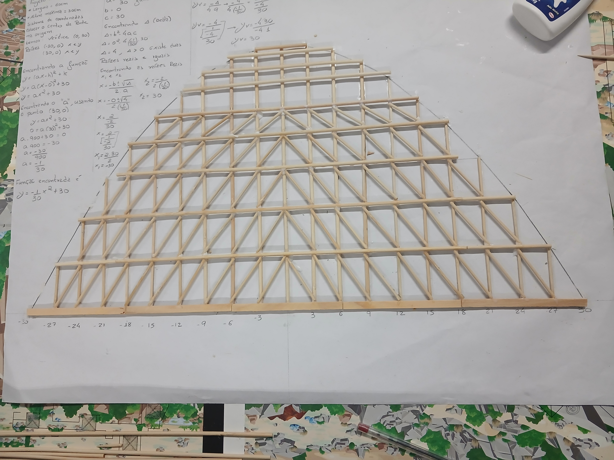
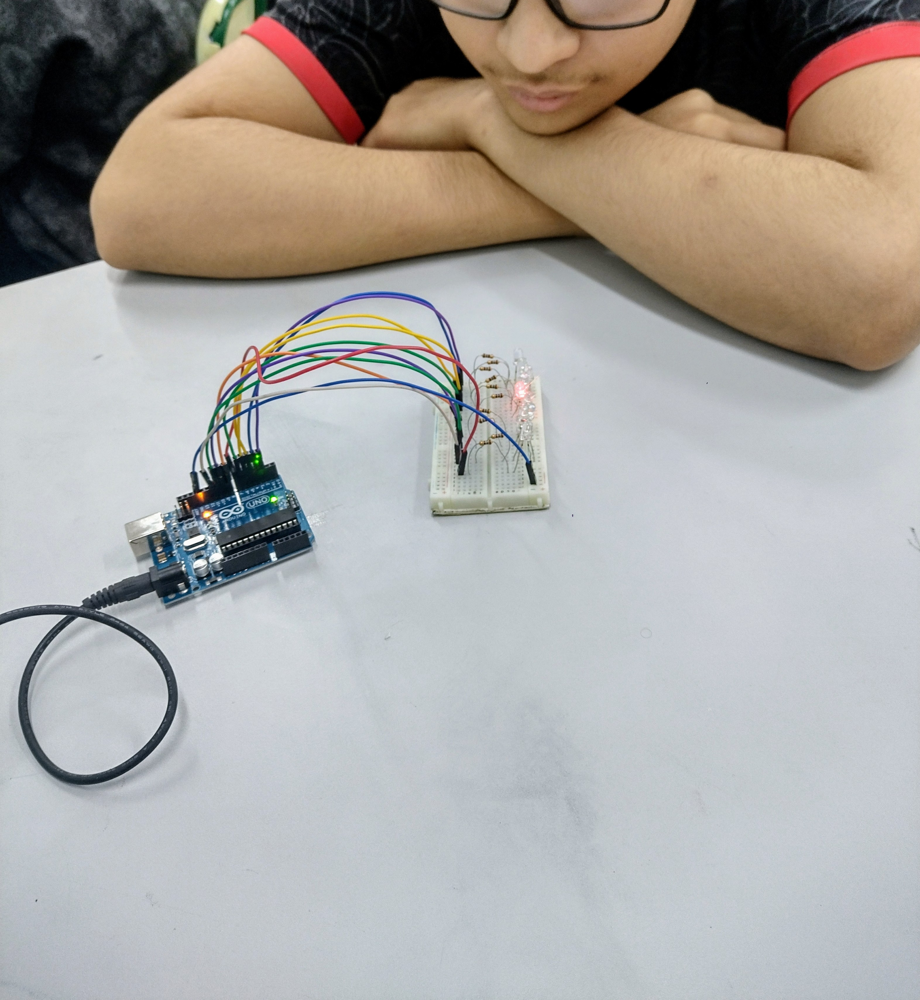
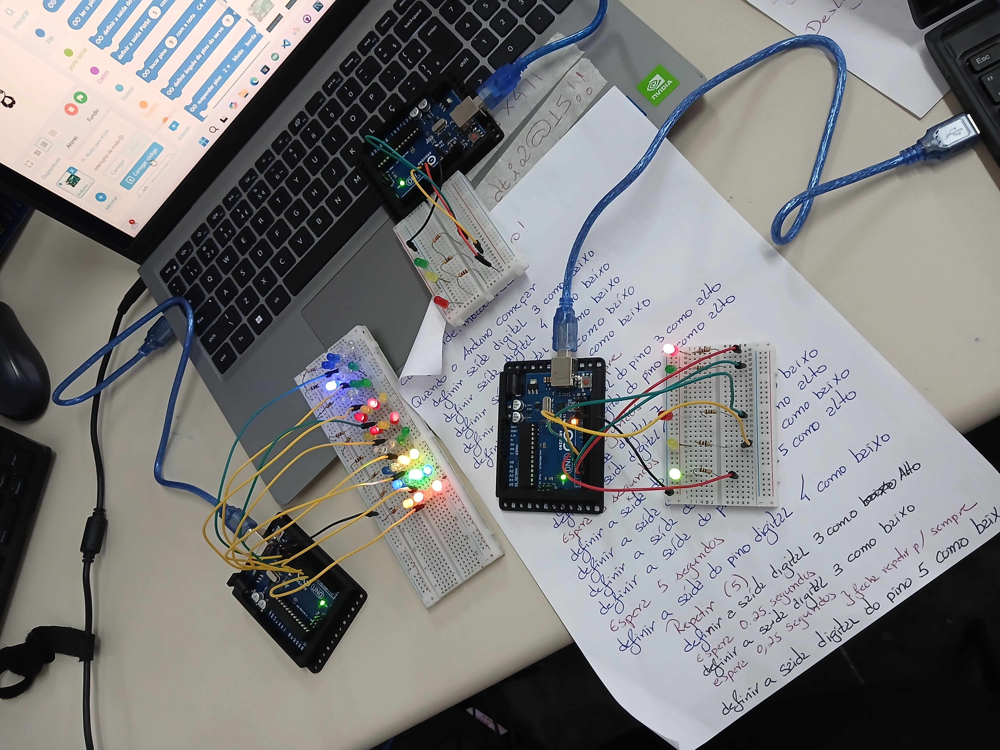
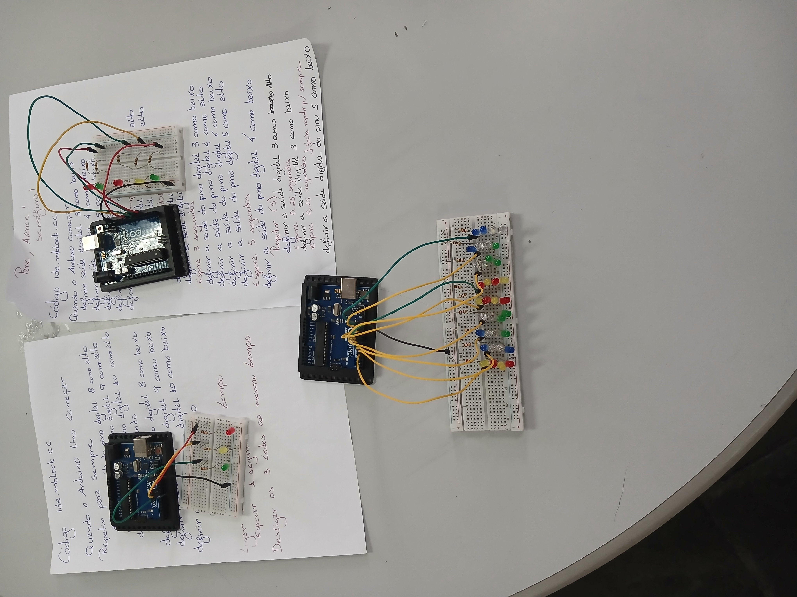

NOSSOS PROJETOS



O projeto Construção e Lançamento de Foguetes foi desenvolvido no Espaço Maker CE-397 com o propósito de aproximar os estudantes da Ciência, Tecnologia e Matemática por meio de uma experiência prática, investigativa e interdisciplinar. A proposta teve início com a apresentação do conteúdo pelo professor Marcelo, utilizando o MozaBook, com recursos como modelos 3D, vídeos e animações para despertar o interesse e o engajamento dos estudantes. Na sequência, o Orientador de Estudos conduziu a construção de um foguete utilizando garrafa PET e materiais recicláveis, associado a um sistema de lançamento com bomba de ar comprimido digital. Em parceria com a professora Patrícia, o projeto integrou conceitos de Matemática, explorando a Equação do Segundo Grau, as parábolas e a trajetória do foguete. Fundamentado nos princípios da Cultura Maker, da abordagem STEAM e do Desenho Universal para a Aprendizagem (DUA), o projeto valoriza diferentes formas de engajamento, representação e expressão, promovendo uma aprendizagem acessível, colaborativa e significativa. Neste site, será documentado todo o processo, desde a apresentação dos conceitos e construção do foguete até os testes e lançamentos, demonstrando como teoria e prática podem caminhar juntas para transformar a aprendizagem.



O projeto Modelagem Matemática da Equação do Segundo Grau na Construção de uma Ponte em Arco foi desenvolvido no Espaço Maker CE-397 com o propósito de demonstrar como conceitos matemáticos podem ser aplicados na resolução de problemas reais por meio de atividades práticas e investigativas. A proposta integra conhecimentos de Matemática, Engenharia e Tecnologia, utilizando a construção de uma ponte em arco como contexto para o estudo da Função Quadrática. Durante o desenvolvimento, os participantes são convidados a investigar, modelar, calcular, construir, testar e analisar uma estrutura física, compreendendo que a Matemática é uma ferramenta essencial para o planejamento e a solução de desafios do mundo real. O projeto está fundamentado nos princípios da Cultura Maker, da abordagem STEAM (Ciência, Tecnologia, Engenharia, Artes e Matemática) e do Desenho Universal para a Aprendizagem (DUA), promovendo múltiplas formas de engajamento, representação e expressão. Dessa maneira, busca-se oferecer experiências de aprendizagem acessíveis, colaborativas e significativas, respeitando as diferentes formas de aprender e incentivando a participação ativa de todos os estudantes. Além da construção da ponte, este material documenta todo o processo de desenvolvimento da atividade, apresentando as etapas de planejamento, modelagem matemática, construção do protótipo e orientações pedagógicas para que a proposta possa ser adaptada e reproduzida em diferentes contextos educacionais. Mais do que ensinar a Equação do Segundo Grau, este projeto pretende despertar a curiosidade, estimular a criatividade e demonstrar que a aprendizagem se torna mais significativa quando teoria e prática caminham juntas.



Neste projeto, os estudantes serão desafiados a construir um modelo de semáforo utilizando a plataforma Arduino, explorando conceitos de eletrônica, programação e automação presentes em diversas tecnologias do nosso cotidiano. A partir da observação de um sistema real de controle de trânsito, os alunos irão compreender como componentes eletrônicos, códigos de programação e lógica de funcionamento trabalham juntos para criar soluções inteligentes. A atividade tem como proposta desenvolver o pensamento Maker e STEAM, incentivando os estudantes a aprenderem por meio da experimentação, da construção de protótipos, da resolução de problemas e do trabalho colaborativo. Durante o processo, eles terão a oportunidade de planejar, montar circuitos, programar sequências de funcionamento, realizar testes e aprimorar suas criações, tornando-se protagonistas da própria aprendizagem. O projeto também é desenvolvido considerando os princípios do DUA (Desenho Universal para a Aprendizagem), oferecendo diferentes formas de participação e aprendizagem para que todos os estudantes possam se envolver. Os conceitos serão apresentados por meio de explicações, imagens, demonstrações práticas e esquemas visuais; os estudantes poderão expressar seus conhecimentos através da montagem, programação, registros, desenhos ou apresentações; e o trabalho em equipe permitirá diferentes formas de contribuição, respeitando habilidades, ritmos e formas de aprender. Ao construir o semáforo, os estudantes irão relacionar tecnologia e situações reais, percebendo como a programação e a automação podem ser utilizadas para melhorar a segurança, a organização e a qualidade de vida das pessoas. Mais do que criar um protótipo eletrônico, o objetivo é estimular a criatividade, a autonomia, o raciocínio lógico e a capacidade de transformar ideias em soluções.